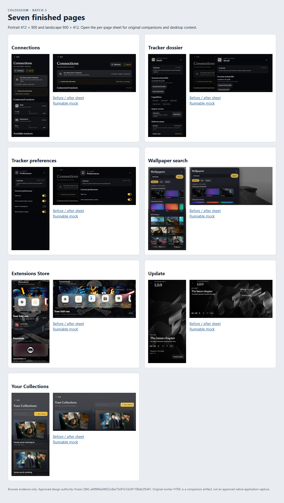

Tracker and utilities
Seven runnable HTML mocks, corrected against the frozen approved QML. Original worker outputs and frozen references are preserved. Use each page’s controls above the app frame to change size, state, insets and text scale.
These pages do not operate Colosseum, accounts, providers, downloads or installation. Sizes and insets are provisional. Desktop checks compare HTML with source; they are not an independent approved app capture.
| Finished page | What to exercise | Original and evidence |
|---|---|---|
| Connectionstracker-connections.html | Connected, disconnected, attention, provider catalogue and local connection transitions. | Source: TrackerSyncCenterPage.qml |
| Tracker dossiertracker-dossier.html | Provider capabilities, import review, matching, bulk choice, export, disconnect and removal. | Source: TrackerSyncCenterPage.qml |
| Tracker preferencestracker-preferences.html | Original preference switches, close/Back, keyboard focus and enlarged text. | Source: TrackerSyncCenterPage.qml |
| Wallpaper searchwallpaper-search.html | Original native scenes, local search, sort, selection, Load more and local Apply. | Source: WallpaperSearch.qml |
| Extensions Storeextensions-store.html | Store, search, installed management, URL preview, original text menu and source setup panels. | Source: ExtensionsStorePage.qml |
| Updateupdate.html | All 12 source update states, chapter navigation and unknown-size progress. | Source: UpdatePage.qml |
| Your Collectionscollections.html | Overview, detail, draft editing, notes, reorder, Undo, create, memberships, discard, delete and empty states. | Source: collections/YourCollectionsPage.qml |


Verification presets
Phones: 412×900, 900×412, 354×792 and 792×354. Desktop: 1280×700. Android tablets: 800×1280 and 1280×800. Stress cases use 130% text and illustrative 24px top and bottom insets; raised keyboards are simulated outside product chrome. Open control and scroll evidence is listed in the coverage files.
Fixture guide
- Reload a page to restore its original representative fixture. Changes remain in that page’s memory.
- For URL installation, use
https://fixture.colosseum.invalid/subdl/manifest.jsonfor the nonconfigurable preview/install flow, orhttps://fixture.colosseum.invalid/comet/manifest.jsonfor setup. These are deliberate offline fixture addresses. https://torrentio.strem.fun/manifest.jsondemonstrates the already-installed fixture. It is not contacted.- The original text menu has an isolated mock clipboard. Copy, Cut and Paste inside the menu do not read the computer clipboard.
- Wallpaper scenes use the frozen native GLSL and QML gradient definitions. The KDE shelf includes all 13 source-named picks. Cold Ripple uses the bundled project file; the other 12 static images were obtained from the exact KDE upstream paths named by the frozen source and are served locally. See asset hashes and retrieval provenance and credits. Search results are explicitly titled project saga artwork, not claimed live Wallhaven results.
- Universe Hall, Tankoyomi configuration, title destinations and parent shell routes are outside Batch 5. Their route requests appear in the review status outside the app frame.
Run locally
From a terminal, run node D:\Colosseum-Android-Phone-Mocks-20261101\review-batches\05-tracker-utilities\tools\serve-mocks.mjs, then open the loopback URL it prints. The server serves the batch root so all relative asset paths remain valid. It needs no package installation.
